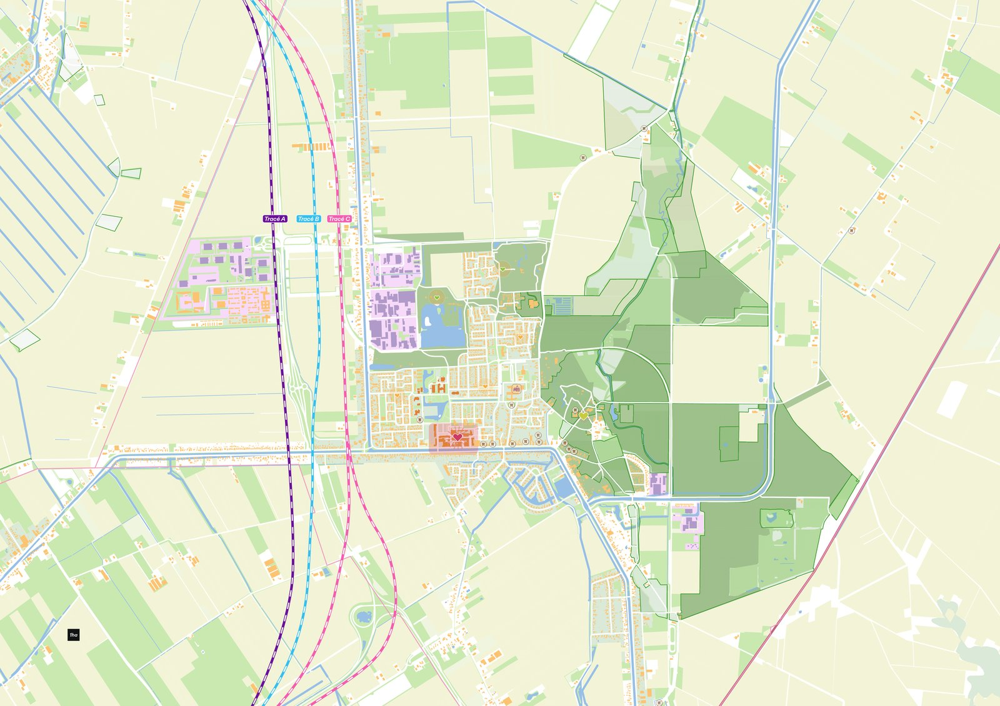
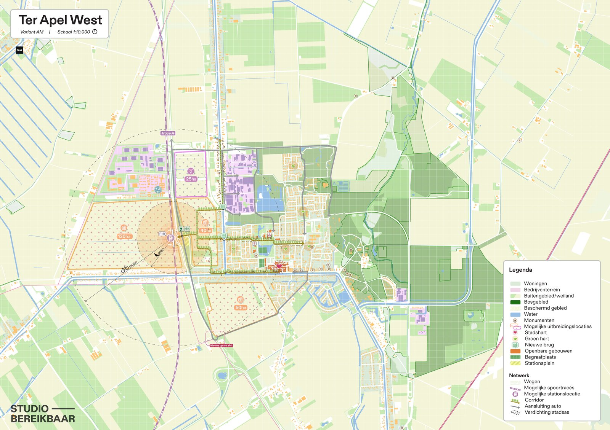
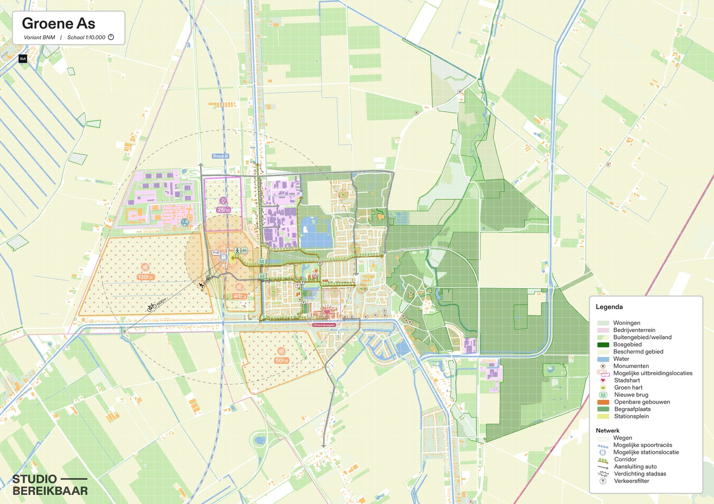
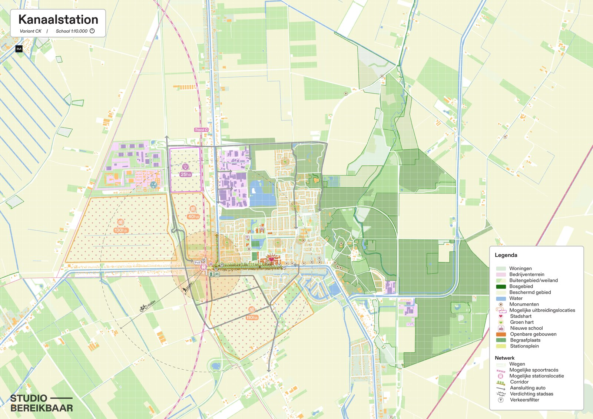
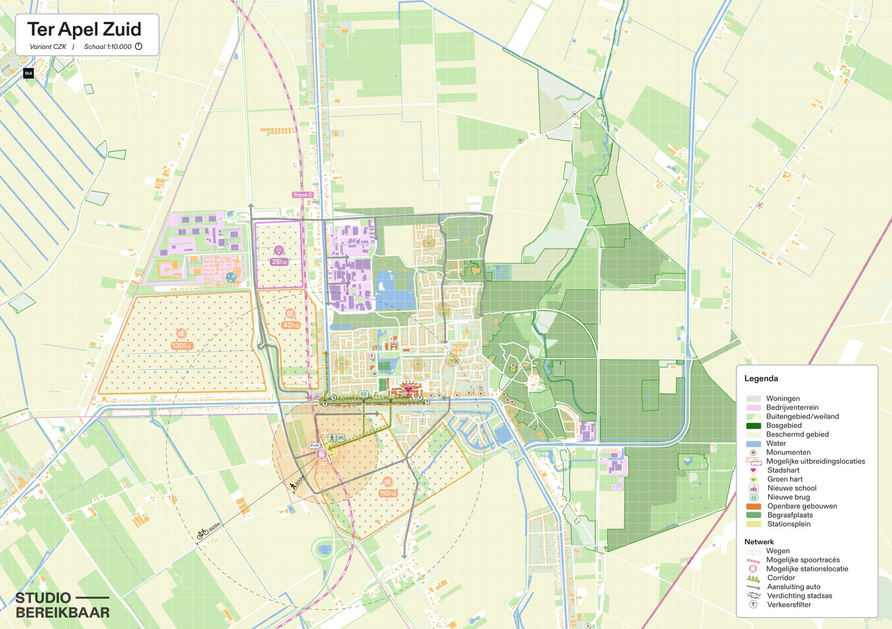
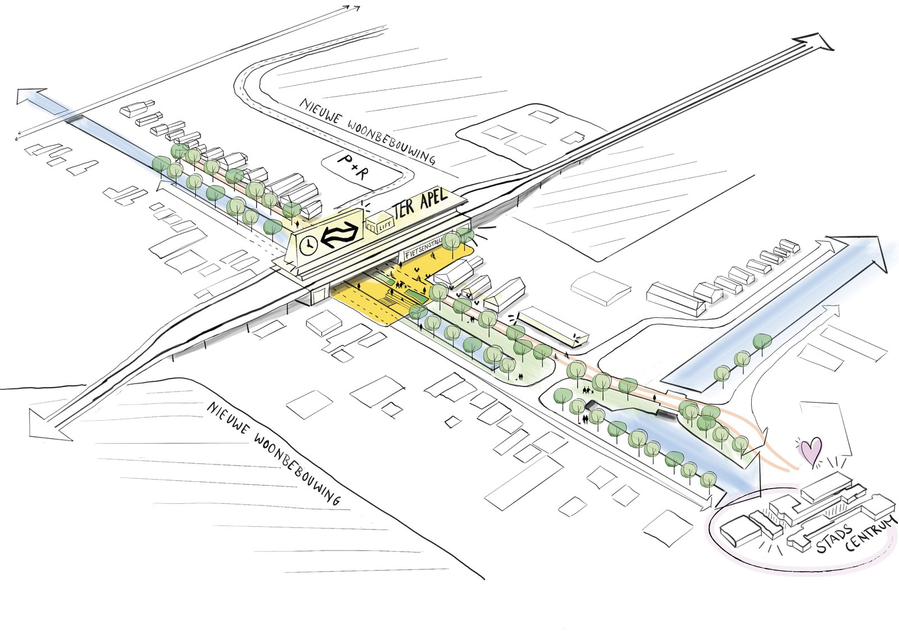

← Back to all projects

Onderzoek locatiekeuze stationsgebied Westerwolde
Four possible station locations for Ter Apel, compared.
Four possible station locations for Ter Apel, compared.
The Nedersaksenlijn, a proposed rail link between Emmen and Stadskanaal, would put Ter Apel back on the Dutch rail map. To prepare for the MIRT-verkenning, we compared four promising station locations for Ter Apel on spatial quality, accessibility, development potential and societal value.
Our advice: treat the future Nedersaksenlijn as a catalyst to regenerate the centre of Ter Apel and its link to the station.
I led the project from start to finish: the research into the four locations and their spatial implications for Ter Apel, the comparison, and the advice.





